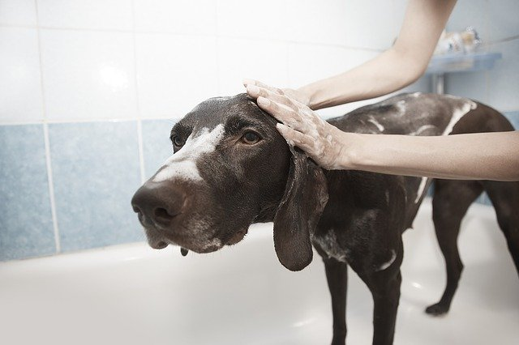
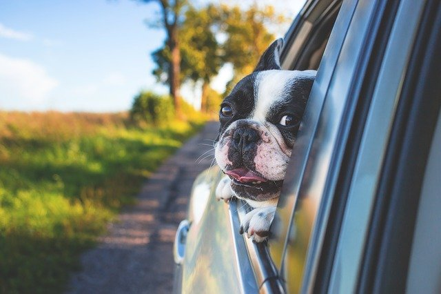

|  | O Banho e Tosa é uma de nossas especialidades. Nele, o seu companheiro irá se sentir em um verdadeiro spa! Temos diversas opções disponíveis ao seu pet: -Banho Medicamentoso (Para animais que precisam de cuidados na pele e/ou na pelagem.) -Hidratação -Tosa Bebê (Excelente para o verão! Animais também sentem calor!) -Tosa de Raças (Para manter características originais de determinada raça.) -Tosa Higiênica (Diminuir a pelagem de lugares onde acumulam sujeiras.) Venha trazer o seu companheiro para um verdadeiro tratamento! Não se preocupe, os felinos também podem ter dia relaxante! |
| O nosso serviço de Táxi Dog oferece ao cliente um transporte seguro e confortável ao seu pet. Caso queira, o dono pode acompanhar a viagem de seu companheiro. Caso não possa, enviaremos uma mensagem e foto após o animal chegar em seu destino. Levamos, ou trazemos, o pet apenas com uma coleira peitoral. Caso o dono queira, podemos emprestar uma ou levar o companheiro dentro de uma caixa de transporte. Não seu preocupe, após o transporte, higienizamos os bancos de trás do carro, a caixa de transporte (caso o pet tenha ficado dentro) e a coleira peitoral, para manter a higiene do ambiente e do pet. Assim como o Banho e Tosa, iremos transportar seu "aumigo" no melhor conforto possível. |
 |